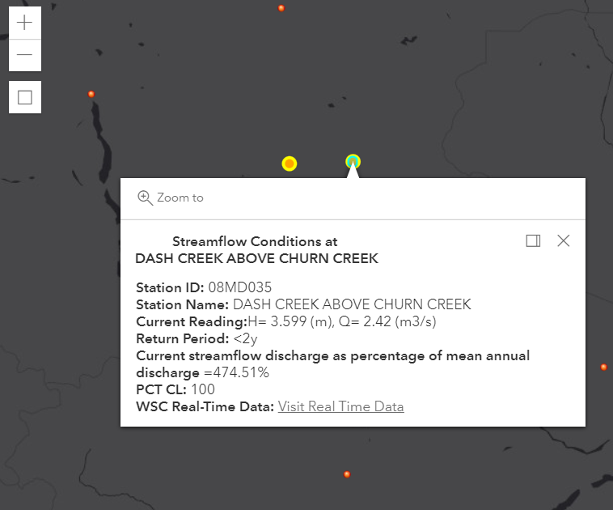

- Building Web Mapping applications which provide user interaction surface and realtime data vitualization.
- Implementing GIS applications to improve the workflow and reduce manaul processes for all the stakeholders.
- Exploring nowaday technologies and upgrading current GIS solutions.
- Locating where the neighbor furiends live, I mean, I am a squirrel observer!
About
I am Kate, a fan of spatial analysis and location strategy, have been working as a GIS Analyst for over 2 years in Victoria, BC. My northern star is Data Science and I have successfully received both degrees in Information Management and Geographic Information Systems. My focus is on what to be highlighed in this massive IT galaxy. My main interests and current responsibilities in GIS are:
And I am also staying on trending technologies in terms of web development, such as HTML5, CSS3 and Bootstrap v5.0.
Some samples of my work:
Light Up Peru
The purpose of this Capstone project is to help the non-profit organization, LUTW (Light Up The World), by determining ideal locations to install solar panel systems by implementing geographic information systems. The web mapping service will allow users to obtain the information while they are at site which they can either view the map or extract the data through the interface.
Methodologies: ArcPy, 3D spatial extension, ArcGIS Online and ArcGIS Web AppBuilder

Streamflow Status in BC
This web map is to demostrate the experiments on ArcGIS API for JavaScript with an operational feature layer, the Streamflow dataset retrieved from DataBC Catalog. Also, a custom widget built for user to select and zoom to an area of interest on the map.
Methodologies: ArcGIS API for JavaScript 4.18, HTML5/CSS3 and TypeScriptInternational Tourist Arrivals ‐ Japan
The entry tourism of visiting has reached to 27 million tourists in Japan in 2017. The growth of the tourism has successfully increased the Japanese income rapidly. According to the Japan Tourism Statistics, it has been found that the top international markets were mostly from East Asia and South Asia, due to the closer geographical locations. The thematic maps were made for these 3 main visit purposes, including tourism, business and other arrivals.
Methodologies: Thematic maps, Classfication and Sturgis rule.